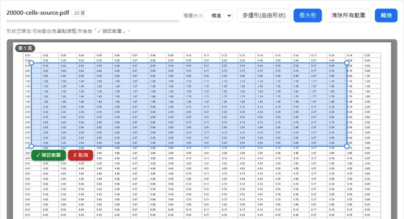
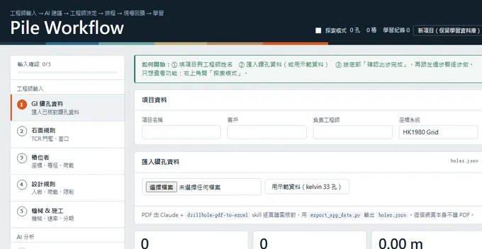
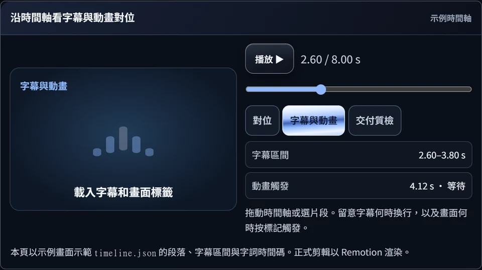
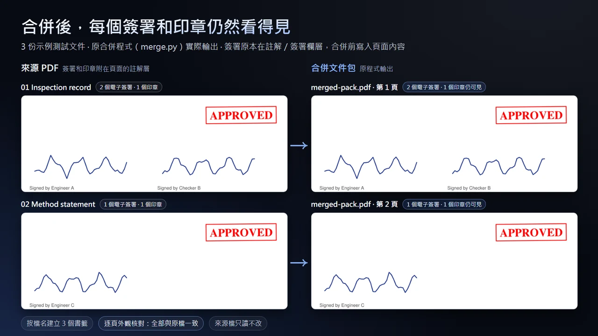
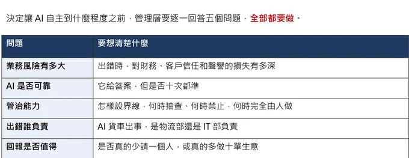
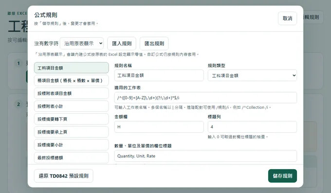
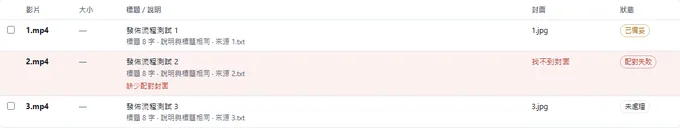
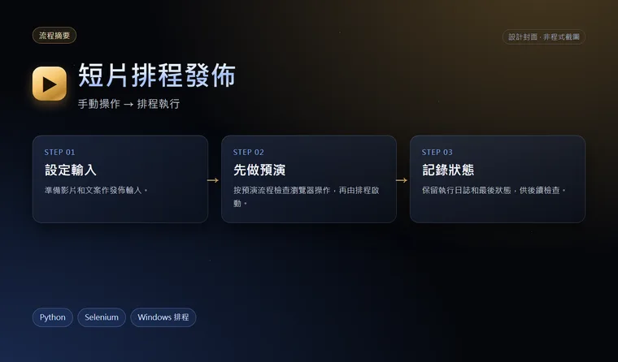

MEASURED RESULTS
量度過的成果
每個數字都連到相應的個案頁。
COST & RELIABILITY
我怎樣把 AI 做準、做平
五條原則，每條都連到個案頁的「模型與成本」表。
- 01
能用程式就不用模型
規則清楚的步驟交給程式，模型只做需要理解的部分。
PDF 的數字由文字層和字形比對讀出：一份文件約 40 種字形，每種只認一次。會議紀錄的屆數、日期由程式從議程填寫。
PDF 還原 Excel - 02
只在有風險的地方花錢
昂貴的檢查只做高風險位置，抽中錯誤才擴大。
PDF 覆核只盲讀高風險格和分層樣本，全格視覺覆核的 API 成本約為抽查的 20 倍。ToGoalAi 超出預算才呼叫壓縮模型。
PDF 還原 Excel - 03
用通過評估的最便宜模型
先在便宜的模型上調好規則，再看是否需要更強的模型。
ToGoalAi 預設 Gemini 2.5 Flash-Lite，伺服器按方案決定可用模型。短片流程的 Skill（可重用的 AI 代理指令包）調校規則後，把審查代理由 Sonnet 改為 Haiku，並持續監察評分有否變鬆。
AutoCut 影片製作 - 04
先量度再改
先用過往資料盲測、把錯誤分類，再決定改哪裏。
會議紀錄用 11 場會議盲測，41 個錯誤逐個歸因。PDF 以 22,766 格全格盲讀驗證，改規則後逐格回歸。
粵語會議紀錄 - 05
本機優先
能在本機跑的模型就在本機跑：不按次收費，保密錄音也留在本機。
會議轉錄用本機 Whisper，App 的雲端 Gemini 是付費選項，保密錄音不用。PDF 的 OCR 改用本機 GPU，1,800 格由約 40 秒降到 2.3 秒。
粵語會議紀錄
「下星期……四？再確認。」
PROJECT INDEX
作品目錄
關於示範資料客戶及公司資料屬機密，本站所有互動示範改用重新建立的示例資料；程式、流程和評估方法與實際使用的相同，評估數字來自實際工作文件。
主要項目 每個附架構、關鍵決定、評估和失敗防護

粵語會議紀錄
由會議錄影整理英文紀錄。同事只需重聽有疑問的片段，確認日期和決定。

PDF 還原 Excel
將數萬格、由 Excel 輸出成 PDF 的工程報表還原為數值，讓工程師可以直接繼續計算。

3D 投標方案模型
投標團隊用同一個模型查看平面、立體及剖面，向評審講解施工方案，用來協助公司爭取工程項目。公司現正用於投標，結果待定。

樁位審查工作台
在三維模型定位每個鑽孔，查看岩面起伏，再對照樁位和工程師的審查決定。

AutoCut 影片製作與發佈
劇本、錄音對位、Remotion 動畫和 FFmpeg 後製，串成可分段重跑的短片流程。

ToGoalAi 學習平台
用自己的教材問答、練習及製作簡報；答案只按教材作答，並以段落編號引用原文。

PDF 合併：保留每個電子簽署
合併帶大量電子簽署和印章的文件包，合併後每個簽署和印章仍然看得見。
其他工具
 文件資料複雜 PDF 判讀 Skill把多欄、細字和跨頁表格的判讀方法寫成 Skill，讓 AI 按來源整理資料，再交成可覆核的 Excel。5 小時 → 15 分鐘
文件資料複雜 PDF 判讀 Skill把多欄、細字和跨頁表格的判讀方法寫成 Skill，讓 AI 按來源整理資料，再交成可覆核的 Excel。5 小時 → 15 分鐘
 工作流程n8n 用量對帳追蹤流程改動前後的 Token 用量。只有兩個版本都交出合格結果，才把該任務納入比較。1,800 → 400 Token（示例測試）
工作流程n8n 用量對帳追蹤流程改動前後的 Token 用量。只有兩個版本都交出合格結果，才把該任務納入比較。1,800 → 400 Token（示例測試）
 空間與模型掃描圖轉 CAD讓掃描或手繪詳圖重新成為可編輯的線條、物件和文字，方便同事在 CAD 繼續改圖。掃描 PDF → 可編輯 DWG
空間與模型掃描圖轉 CAD讓掃描或手繪詳圖重新成為可編輯的線條、物件和文字，方便同事在 CAD 繼續改圖。掃描 PDF → 可編輯 DWG

影音與發佈講座轉錄與管理摘要先以調校過的本機粵語 ASR 取得帶時間碼逐字稿，再對照投影片及錄音，把決策和風險整理成管理摘要。本機逐字稿 → 管理摘要 產品開發AI 工具評估報告把五個 AI 方案的功能、證據及試用條件整理成報告，協助管理層決定值得先試哪一項。5 個方案 → 試用建議
產品開發AI 工具評估報告把五個 AI 方案的功能、證據及試用條件整理成報告，協助管理層決定值得先試哪一項。5 個方案 → 試用建議
 空間與模型PLAXIS 模型檢查讀取既有分析模型的階段、材料與構件，將狀態整理成工程師可核對的清單。模型狀態 → 覆核清單
空間與模型PLAXIS 模型檢查讀取既有分析模型的階段、材料與構件，將狀態整理成工程師可核對的清單。模型狀態 → 覆核清單

文件資料Excel 公式助手按規則找出工作簿中需要更新的公式，讓同事先看修改差異，再另存副本。逐格修改 → 預覽再另存 文件資料PDF 批註工具在 PDF 上標出需要覆核的區域，配上圖例再匯出，讓接手的同事知道應查看哪個位置。頁面位置 → 帶標記 PDF
文件資料PDF 批註工具在 PDF 上標出需要覆核的區域，配上圖例再匯出，讓接手的同事知道應查看哪個位置。頁面位置 → 帶標記 PDF
 空間與模型程式化施工動畫用 Python 驅動 Blender 場景、設備和鏡頭，把施工先後次序變成可重跑的解說動畫。工序資料 → 施工動畫
空間與模型程式化施工動畫用 Python 驅動 Blender 場景、設備和鏡頭，把施工先後次序變成可重跑的解說動畫。工序資料 → 施工動畫

影音與發佈YouTube 上傳預檢在上傳前配對影片、標題和封面。缺件先提示，換檔後重跑時跳過已準備的素材。素材清單 → 可提交批次
影音與發佈短片排程發佈以 Python 和瀏覽器自動化串接短片發佈，將預演、排程和執行狀態整理成可重用工具。手動操作 → 排程執行找不到符合這些條件的作品。

ABOUT GARY
關於我
鄧嘉維 · Tang Ka Wai, Gary
先量度，再交付
我的工程方法我以 AI 編碼代理實作，本站所有系統的程式碼都由代理撰寫。我負責系統框架、規則與限制、目標、執行方法、評估及驗收，以及安全邊界：代理一出錯就即時叫停，代理的每次改動都先在沙盒內進行。
我在工程公司設計部負責 AI 工具。做法是先跟同事走一次原流程，分清哪些步驟用程式、哪些交給模型、哪些必須由人決定，再按上面五條原則選模型、盲測和驗收。
- 產品與維護
- 一人主導及維護網站與手機 App，程式由 Claude Code 和 Codex 等編碼代理實作。熟悉 Python、JavaScript、Three.js，能讀懂、測試及驗收代理寫的程式。
- AI 與部署
- RAG、n8n、AI Skills、API 整合、Supabase、GitHub、Vercel。
- 工作經歷
- 2026.09 至今 · Kin Wing Engineering Co. Ltd
Assistant AI and design Administrator，設計部。 - 學歷與證書
- 國立政治大學公共行政學系，2026.06 畢業。經 HKCAAVQ 評估等同香港榮譽學士學位。持有 Claude 101、AI Fluency 證書。